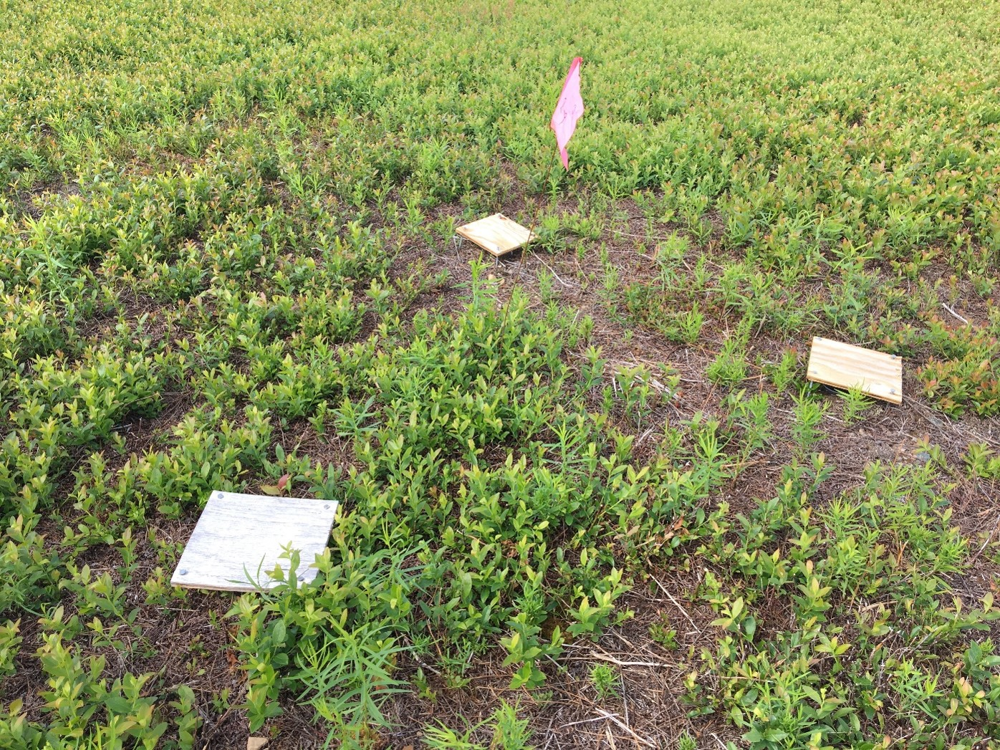
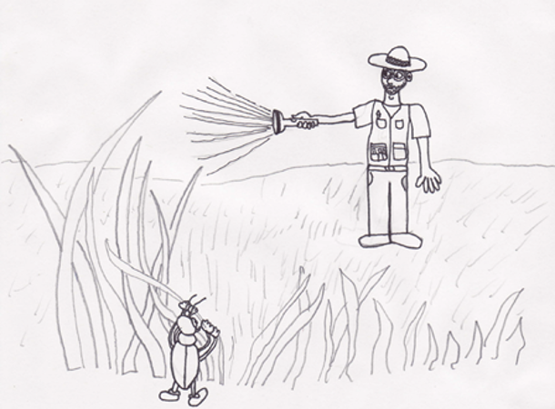

Carabid diversity across space and time, and the dispersal ability of Harpalus rufipes in Nova Scotia lowbush blueberry fields


The Carabidae family is well-known for acting as natural predators of pests in many different agricultural systems, and that is no exception in lowbush blueberry fields. A study in 2012 identified some species that can be found in lowbush blueberry fields, but there was still so much to explore! For instance, the fields in the 2012 study were relatively small, which begged the question of whether the community distribution trends they observed would also be seen in larger fields. Therefore, we designed one of my chapters to explore this very question, and we found that while carabid abundance increased with distance from the field edge, their genus richness (number of genera) did not change.
We also found, in a study that was its own chapter in my thesis but was combined with the diversity study into one manuscript, that the most abundant carabid species in blueberry fields, Harpalus rufipes, displaces itself about 14.5 m/day by walking. We discovered this by marking the beetles with fluorescent paint, releasing them at the centre of many concentric rings, and then coming back to look for them with UV flashlights at night! I must say, that was arguably the most fun part of my MSc!
Combining these two studies into one allowed us to look at the carabid community in blueberry fields from two points of view, those being species distribution and individual movement, which gave us a more complete idea of how carabids exist in that system. Our study was published by Oxford University Press in the journal Environmental Entomology. You can find it here.